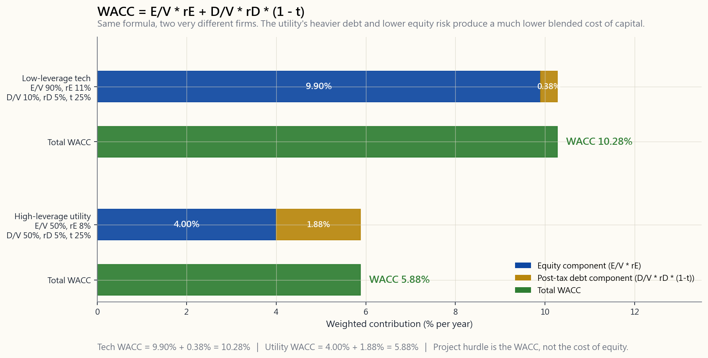
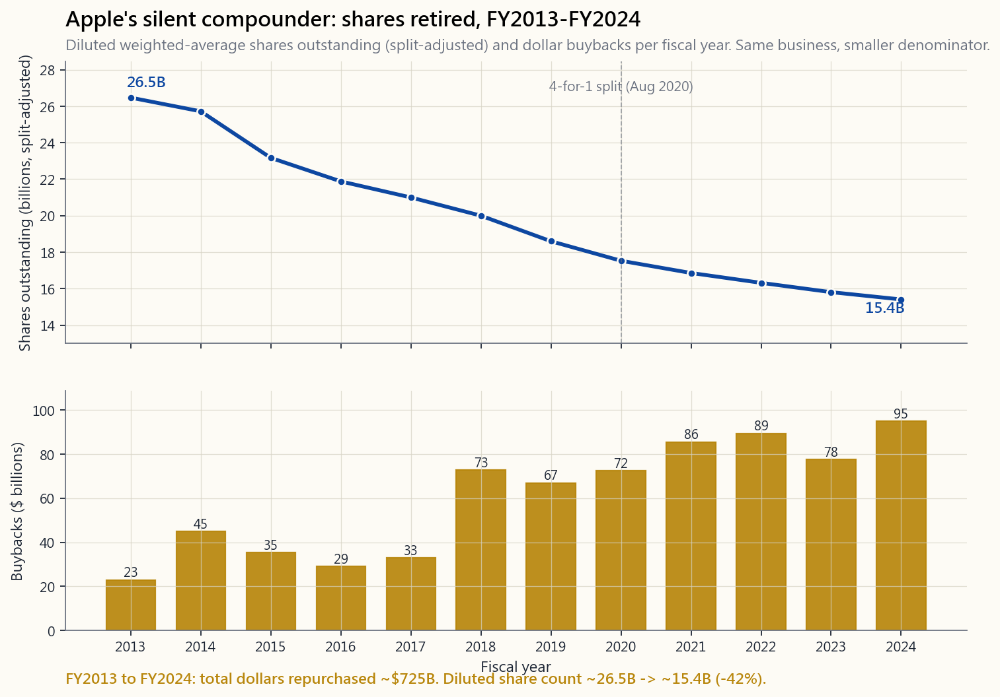

Week 19: Corporate Finance for Investors — Capital Structure, WACC, Buybacks, M&A
1. Why This Is Important
When you buy a share of a public company you are hiring a management team to allocate your capital on your behalf. Over a decade, a firm that earns a billion dollars a year will deploy ten billion dollars. Whether that ten billion goes into projects that earn 20% or acquisitions that earn 4% is a far bigger driver of your return than any quarter's earnings beat. Corporate finance is the language those allocation decisions are written in, and it is the closest thing the public market gives you to a window onto the CEO's actual job.
Four reasons this lesson belongs in an investor's curriculum, not just an accountant's:
colour.** A company funded entirely with equity and a company funded half with debt have the same operating business, but completely different return distributions for the equity holder. The leveraged version has higher expected return-on-equity in normal years and a wider drawdown — sometimes a complete wipeout — in bad ones. You cannot evaluate two companies' P/Es without first knowing how levered each one is.
WACC sounds like a textbook abstraction, but it is operational: if a CEO greenlights a project earning 6% while the firm's WACC is 9%, that project destroys value every year it operates, regardless of how cleverly the press release is worded. The same discount rate is also what the DCF in your valuation spreadsheet uses, so a wrong WACC means a wrong target price.
textbook says they are equivalent under perfect markets. Reality adds taxes, signalling, executive compensation dilution, and price discipline. Apple has spent over $700 billion on buybacks since 2013 — more than the entire market capitalisation of all but a handful of companies on Earth — and the share count is the silent compounder behind its per-share earnings growth.
academic evidence is brutal.** Target shareholders typically gain 20–30%; acquirer shareholders typically lose 1%–5% on announcement. As a holder of the acquirer, an M&A press release should make you reach for a checklist, not a celebration.
This lesson is investor-facing only. We do not cover capital-budgeting spreadsheets, optimal capital structure proofs, or the auditor's view of intercompany eliminations. We cover what to read, what to look for, and which red flags to flinch at.
2. What You Need to Know
2.1 Debt vs. Equity — Two Ways to Buy the Same Asset
Every company is funded by some mix of debt (lenders) and equity (owners). The lender's claim is contractual: a fixed coupon, paid on schedule, senior in liquidation. The owner's claim is residual: whatever is left after lenders, employees, suppliers, and the tax authority have been paid. The lender is paid first and capped on the upside; the owner is paid last and uncapped.
The investor consequence: identical operating cash flows, financed differently, produce very different equity outcomes.
| Item | All-equity firm | 50% debt firm |
|---|---|---|
| Total assets | $1,000M | $1,000M |
| Debt at 6% | 0 | 500M |
| Equity | 1,000M | 500M |
| Operating income (good year) | 150M | 150M |
| Less interest | 0 | 30M |
| Less tax at 25% | 37.5M | 30M |
| Net income | 112.5M | 90M |
| Return on equity | 11.25% | 18.0% |
In a good year the leveraged firm's owners earn 60% more on their capital. The same leverage in a year where operating income drops to $20 million produces a loss for the leveraged owner and a small profit for the unlevered owner. Leverage does not change the business; it changes the variance of the equity return. As Horace puts it, "the market can stay irrational longer than you can stay solvent" — and a leveraged equity holder runs out of solvency far faster than an unlevered one.
2.2 Modigliani–Miller, and the Real-World Frictions That Break It
In 1958 Modigliani and Miller proved that, in a world with no taxes, no bankruptcy costs, and symmetric information, the total value of a firm is independent of how it is financed. Slicing the same pizza into different combinations of debt and equity does not change the size of the pizza. Every finance student is asked to memorise this result and then immediately taught why it is wrong in practice — and that is the point. M&M is a baseline that tells you exactly which real-world frictions make capital structure matter.
There are three big frictions:
- The tax shield. Interest expense is tax-deductible; dividends
- Distress costs. Too much debt makes default and reorganisation
- Information and agency. Managers know more about the firm than
The optimal capital structure is the level of debt where the marginal tax benefit equals the marginal increase in distress cost. For mature companies with stable cash flows this is typically 30%–50% debt. For volatile-cash-flow businesses (tech, biotech, anything cyclical) the optimum sits much lower; for stable utilities and REITs it sits much higher. There is no universal answer, only a calibration to the underlying business.
2.3 WACC — One Hurdle Rate to Rule Them All
The Weighted Average Cost of Capital is the blended cost of all the money a firm has put to work. The formula is unintimidating once you read it slowly:
$$ \text{WACC} = \frac{E}{V}\cdot r_E + \frac{D}{V}\cdot r_D \cdot (1 - t) $$
where $E$ is market equity, $D$ is market debt, $V = E + D$ is total capital, $r_E$ is the cost of equity (typically estimated via CAPM: $r_f + \beta \cdot \text{ERP}$), $r_D$ is the cost of debt (the yield on the firm's bonds), and $t$ is the marginal tax rate. The $(1 - t)$ factor is where the tax shield enters: post-tax debt is cheaper than pre-tax debt by exactly the tax rate.
The image below shows the same arithmetic for two very different firms — a low-leverage tech business and a high-leverage utility:

The interpretation is simple and brutal: every project the firm greenlights must earn at least the WACC, on a risk-adjusted basis, to create value for shareholders. A project earning 7% inside a firm with WACC 9% destroys 2% per year, every year, no matter what slide the CFO put it on. ROIC > WACC is the single cleanest test of whether a CEO is creating or destroying value.
A few practical notes:
- WACC is a current number, not a historical one. When rates rise,
- Use market values, not book values. Book equity for a company
- WACC is a firm-level average. A project riskier than the firm's
2.4 Dividends, Buybacks, and Why They Are Almost the Same
In a frictionless world, $1 of dividends and $1 of buyback are identical: both transfer $1 of corporate cash to shareholders. The dividend appears as cash in your account and lowers the stock price by $1 on the ex-date. The buyback uses $1 of corporate cash to retire shares, raising the per-share value of the remaining shares by exactly $1. Conservation of value says the two are equivalent.
Three real-world frictions break the equivalence and matter for investors:
- Tax. In the US, qualified dividends are taxed each
- Price discipline. A buyback at $30 with intrinsic value $50 is
- The dilution offset trap. The most common abuse: a firm
Apple is the canonical positive example. Since restarting the program in mid-2013 it has spent over $700 billion repurchasing stock and has reduced its diluted share count from roughly 26.5 billion (post the 2020 4-for-1 split adjustment) to about 15.4 billion in FY2024. The image below traces the trajectory:

Same business. Same iPhone. Same gross margin. The compounding in Apple's per-share earnings over this decade was as much a story of the denominator shrinking as the numerator growing. Share count is the silent compounder, and most retail investors track it almost not at all.
The interactive companion to this section lets you tune WACC inputs live (equity weight, cost of equity, cost of debt, tax rate), see the effect on a $100M five-year project's NPV, and compare against approximate WACCs for AAPL, MSFT, JPM, KO, F. Try moving the leverage up at constant business risk and watch the project NPV rise — until you push too far and the implied distress cost (which the simple formula does not model) would more than offset the gain.
2.5 M&A — Where Most Acquirer Equity Goes to Die
Mergers and acquisitions are the single most studied corporate finance event, and the empirical pattern is consistent across decades and geographies: target shareholders win, acquirer shareholders lose, and combined value is roughly flat or negative on announcement.
The math of the premium:
- Target trades at $40, market cap $4 billion.
- Acquirer offers $52 — a 30% premium — to win the deal in a
- The acquirer must believe it can extract at least $1.2 billion of
- Synergy claims at the time of announcement average ~6% of
The recurring failure modes:
- Winner's curse. In a contested process, the bidder who wins is
- Integration friction. Two payroll systems, two ERP stacks,
- Empire building. CEO compensation correlates with company
- Cycle timing. M&A volume peaks at market peaks. Acquirers
The investor checklist when you wake up to an M&A press release on a holding:
being paid? Is it above or below comparable transactions?
acquirer is putting its own money down). All-stock at a depressed price is worst (the acquirer is using overvalued or fairly-valued paper to buy a real asset). Heavy debt finance flips the entire capital structure of the combined entity — re-do your WACC.
are credible and quantifiable. Revenue synergies ("cross-sell opportunities") are usually fiction. If more than half the premium is justified by revenue synergies, fade.
Pull the post-deal ROIC. Serial acquirers with a long winning record are rare and worth a premium; serial acquirers with a long losing record are trying to outrun a stalling core business.
"transformational," the existing business is stagnating and they are buying a story. Selling a stalling business to fund a story you can't yet evaluate is rarely a trade you want.
3. Common Misconceptions
tax shield, often runs a higher WACC than necessary, and sometimes signals the absence of capital discipline rather than the presence of caution. Moderate debt, scaled to the business's cash-flow stability, is structurally cheaper than equity.
drops by approximately the dividend amount. The dividend is value transfer from corporate cash to your pocket, not value creation. What it provides is forced distribution and tax-bracket sorting, not a free lunch.
yield is more often a market verdict that the dividend is about to be cut than a generosity signal. Look at FCF coverage and payout-ratio trend before chasing yield. The yield trap is one of the most common mistakes income-seekers make.
below intrinsic value, and only when share count actually declines. A buyback at $50 with intrinsic value $30 is wealth destruction dressed in a press release. Always check whether diluted shares outstanding actually fell.
and with the underlying business risk. A historical WACC plugged into a current valuation gives you a wrong number that looks precise.
deploy capital where it earns above WACC. Earnings can be grown indefinitely by stacking value-destroying acquisitions on top of a healthy core, until one day the core is no longer healthy enough to hide them.
Combined value at announcement is roughly flat to slightly negative; the acquirer typically gives up 1%–5% of its own market cap to the target's holders.
irrelevant as a prescription and essential as a baseline. Every real-world deviation from M&M is something specific — taxes, distress, asymmetry, agency — and naming the deviation is how you reason about which capital structure changes matter for the equity.
4. Q&A
Q1: How do I get a quick WACC for a US large-cap I'm researching? A. Pull the long-term debt yield from the most recent bond issuance or from a market data screen, multiply by $(1 - t)$ using a 21%–25% effective tax rate. For cost of equity, use the 10-year Treasury yield as $r_f$, the firm's beta from any data terminal, and an equity risk premium of 5%–6%. Weight the two by current market values of debt and equity, not book. Aswath Damodaran publishes industry WACC tables once a year that are a useful sanity check.
Q2: Can I just compare WACCs across firms to pick the cheapest one? A. No, because a low WACC reflects a safer business, not a better investment. The right comparison is ROIC versus WACC for each firm — a high-ROIC firm with a high WACC creates more value than a low-ROIC firm with a low WACC.
Q3: What's a "good" payout ratio? A. There is no single number. Mature low-growth firms (utilities, consumer staples) can sustain 60%–80% comfortably because they have no better use for the cash. Growth firms reinvesting at high ROIC should be paying zero dividend — Amazon famously paid none for decades while reinvesting at 30%+ returns. The wrong number is the high payout ratio sustained by debt or by FCF that no longer covers it; that is a cut waiting to happen.
Q4: Buyback vs. dividend — which one should I prefer as a holder? A. As a US taxable holder in a high bracket, buybacks (which defer the realisation into capital-gains land, controlled by you) are materially more efficient than dividends (taxed each year on your schedule, not theirs). As an income-seeking retiree in a tax-deferred account, dividends and the cash-flow predictability they provide are worth more. Same firm, different optimal answer per holder.
**Q5: What's the cleanest one-line test of capital allocation quality?** A. ROIC consistently above WACC over a 5- to 10-year window, combined with a falling diluted share count. The first proves the CEO is creating value with the marginal dollar; the second proves the value is reaching the existing shareholders rather than being recycled into executive comp.
Q6: Why has Apple bought back over $700 billion of stock? A. Because (a) it generates more cash than its operating business can absorb at high incremental returns, (b) management has been disciplined enough not to chase a transformational acquisition with the surplus, and (c) Tim Cook's stated capital plan is to drive net cash to roughly zero. The result is a denominator that has shrunk faster than most growth companies' numerators have grown — and a per-share compounding rate substantially above the underlying revenue growth rate.
Q7: When a holding announces an acquisition, how should I react? A. Default to scepticism. Read the price (multiple paid versus comparables), the funding mix (cash vs. stock vs. debt), the synergy claim (cost vs. revenue, % of premium), and the track record of the management team. If three of those four are unfavourable, trim or hedge. The day-one reaction in the acquirer's stock is usually directionally right.
Q8: Why are dual-class share structures controversial? A. They let founders retain voting control with a small economic stake — Mark Zuckerberg controls Meta with roughly 13% of the economics but a majority of the votes via Class B. The argument for is that visionary founders need protection from short-termist shareholders. The argument against is that they insulate management from accountability when the founder is no longer right. Dual-class firms trade at a measurable governance discount in the academic literature; whether that discount is fair compensation for the protection is the empirical question.
**Q9: How is WACC related to the DCF discount rate I'll use later in the course?** A. They are the same number, when the cash flows being discounted are firm-level (free cash flow to the firm). When the cash flows are equity-level (free cash flow to equity, or dividends), the discount rate is the cost of equity alone, not the blended WACC. Many practitioner DCFs go wrong precisely at this matching step.
**Q10: Which corporate-finance metric do you (Horace) actually watch first when scanning a US large-cap?** A. Diluted shares outstanding over five and ten years, alongside ROIC. If shares are flat or rising while management announces buybacks, the buybacks are dilution offsets and the equity holder is being quietly shorted by the comp committee. If shares are falling and ROIC is above WACC, the compounding is real and the rest of the analysis is downstream of those two facts.
第十九週：投資者的企業財務——資本結構、加權平均資本成本、股份回購及併購
1. 為何這一課至關重要
當你買入一間上市公司的股份，你其實是在聘用一支管理團隊，代你配置資本。在十年之間，一間每年賺十億美元的公司，將部署一百億美元。這一百億美元究竟投入回報率達 20% 的項目，還是流入回報率僅 4% 的收購，對你長期回報的影響，遠遠大於任何一個季度的盈利超出預期。企業財務就是這些資本配置決策所使用的語言，也是公開市場所能給予你的、最接近觀察行政總裁真實工作的一扇窗。
以下四個理由說明這一課屬於投資者的學習課程，而非僅屬會計師的範疇：
本課只針對投資者視角。我們不涵蓋資本預算試算表、最優資本結構的數學推導，或審計師眼中的跨公司抵銷。我們涵蓋的是：怎樣閱讀、怎樣尋找關鍵訊號，以及哪些危險信號值得警覺。
2. 你需要掌握的內容
2.1 債務與股權——購入同一資產的兩種方式
每間公司都以債務（借貸人）與股權（所有人）的某種組合來融資。借貸人的索償權具有合約保障：固定票息、按期支付、清盤時優先受償。所有人的索償權是剩餘性的：在借貸人、員工、供應商及稅務機關獲得清償後，剩下什麼才屬於所有人。借貸人優先受償，上行空間受限；所有人最後受償，上行空間無限。
對投資者的啟示：相同的經營現金流，以不同方式融資，會為股權持有人帶來截然不同的結果。
| 項目 | 純股權公司 | 50% 債務公司 |
|---|---|---|
| 總資產 | 10億美元 | 10億美元 |
| 利率 6% 的債務 | 0 | 5億 |
| 股權 | 10億 | 5億 |
| 經營收入（好年份） | 1.5億 | 1.5億 |
| 減：利息 | 0 | 3,000萬 |
| 減：25% 稅項 | 3,750萬 | 3,000萬 |
| 淨利潤 | 1.125億 | 9,000萬 |
| 股本回報率 | 11.25% | 18.0% |
在好年份，槓桿公司的所有人在資本上的回報高出 60%。同樣的槓桿，若在經營收入跌至 2,000 萬美元的年份，槓桿持有人出現虧損，非槓桿持有人則錄得小額盈利。槓桿不改變業務本身，它改變的是股權回報的波動性。正如陳馬所言，「市場可以在你耗盡流動性之前保持非理性」——而槓桿股權持有人耗盡流動性的速度，遠比非槓桿持有人快得多。
2.2 莫迪利亞尼-米勒定理，以及打破它的現實摩擦
1958 年，莫迪利亞尼與米勒證明：在一個無稅、無破產成本、資訊對稱的世界裡，公司的總價值與其融資方式無關。把同一塊披薩切成不同比例的債務與股權組合，並不會改變披薩的大小。每位財務學生都被要求記住這個結論，然後立即學習它在現實中為何不成立——這正是重點所在。莫迪利亞尼-米勒定理是一條基準線，它精確地告訴你，哪些現實摩擦使資本結構真正重要。
主要有三大摩擦：
- 稅盾效應。 利息支出可以稅前扣除；股息則不能。一間以 25% 企業稅率支付 100 美元利息的公司，實際上只支出了 75 美元。這個稅盾是真實的金錢，它推動最優資本結構走向更多債務，超出莫迪利亞尼-米勒定理的預測。
- 財務困境成本。 過多的債務提高了違約和重組的可能性。直接成本（法律費用、重組顧問費用、資產低價出售）和間接成本（客戶流失、供應商收緊條款、核心員工離職）巨大且不對稱——只有在公司已身陷困境時才會出現。這將最優結構推回更少債務的方向。
- 資訊不對稱與代理問題。 管理層對公司的了解遠多於外部投資者。發行股票被市場解讀為管理層認為股票被高估的信號；發行債務則被解讀為對未來現金流充滿信心。這就是融資優先順序理論——公司優先使用內部資金，其次是債務，最後不得已才發行股票。
2.3 加權平均資本成本——一個統領所有決策的門檻利率
加權平均資本成本是公司所有已部署資金的綜合成本。只要慢慢讀，公式並不可怕：
$$ \text{加權平均資本成本} = \frac{E}{V}\cdot r_E + \frac{D}{V}\cdot r_D \cdot (1 - t) $$
其中 $E$ 是市值，$D$ 是市場價值的債務，$V = E + D$ 是總資本，$r_E$ 是股權成本（通常透過資本資產定價模型估算：$r_f + \beta \cdot \text{股票風險溢價}$），$r_D$ 是債務成本（公司債券的收益率），$t$ 是邊際稅率。$(1 - t)$ 因子是稅盾效應的體現：稅後債務成本比稅前便宜，差距恰好是稅率。
下圖顯示了兩間截然不同公司的相同計算——低槓桿科技公司與高槓桿公用事業公司：
解讀簡單而直接：公司批准的每個項目，在經風險調整後，必須至少達到加權平均資本成本，才能為股東創造價值。一個在加權平均資本成本 9% 的公司內回報率 7% 的項目，每年摧毀 2% 的價值，無論財務總監如何包裝幻燈片。投入資本回報率高於加權平均資本成本，是衡量行政總裁究竟在創造還是摧毀價值的最簡潔測試。
幾點實務提示：
- 加權平均資本成本是當前數字，而非歷史數字。利率上升時，加權平均資本成本機械式地隨之上升。
- 使用市場價值，而非賬面價值。一間回購股份十年的公司，其賬面股東權益毫無意義——對某些公司而言（波音、星巴克在某些時期）甚至是負值。
- 加權平均資本成本是公司層面的平均值。風險高於公司基礎業務的項目應以更高的折現率折算；風險較低的項目則以較低的折現率折算。以單一加權平均資本成本套用於整個資本計劃的財務總監，會系統性地過度投資於風險較高的項目，並對較安全的項目投資不足。
2.4 股息、股份回購，以及它們為何幾近等價
在無摩擦的世界裡，1 美元的股息與 1 美元的股份回購完全相同：兩者均將 1 美元企業現金轉移給股東。股息以現金形式存入你的帳戶，並在除息日令股價下跌 1 美元。股份回購用 1 美元企業現金買入並注銷股份，令剩餘股份的每股價值恰好上升 1 美元。價值守恆定律表明兩者等價。
三項現實摩擦打破了這種等價性，並對投資者至關重要：
- 稅務。 在美國，合資格股息每年收到時即須繳稅。股份回購則將收益遞延至資本增值範疇，由持有人自行選擇何時變現（或不變現——死後資產承接可抹去稅務負擔）。對於高收入的美國應稅持有人，這種遞延在數十年複利之下價值不菲。陳馬的更廣泛原則——投資組合的構建，既取決於稅務效益和期權/保證金工具，也取決於標的選擇本身——在此直接適用：兩種現金回報機制對同一投資者而言，稅後並不可互換。
- 價格紀律。 在每股 30 美元、內在價值 50 美元時進行股份回購，是一筆絕佳交易——每投入一美元，便為剩餘持有人購入 1.67 美元的價值。在每股 50 美元、內在價值 30 美元時進行回購，則是將 0.40 美元的價值從剩餘持有人手中轉移給賣出的人。大多數公司進行回購時，完全沒有明確的估值紀律，這正是為何回購的實證結果參差不齊，儘管其背後的數學原理十分簡單。
- 攤薄抵消陷阱。 最常見的濫用手法：一間公司宣布 50 億美元的股份回購，股份數量卻幾乎紋絲不動，因為公司同時向高管發行了 40 億美元的股份薪酬。股份回購於是僅僅是在抵消攤薄，而非回饋資本。核查方法很機械——調出過去五年的股份數量，看它是否真正下降。
同一門業務。同一部 iPhone。同一毛利率。蘋果在這十年的每股盈利複利增長，既是分子增長的故事，也同樣是分母收縮的故事。股份數量是無聲的複利引擎，而大多數散戶投資者對此幾乎毫不關注。
本節的互動工具讓你即時調整加權平均資本成本的各項輸入（股權比重、股權成本、債務成本、稅率），觀察其對一個一億美元、為期五年的項目淨現值的影響，並與蘋果、微軟、摩根大通、可口可樂、福特的大概加權平均資本成本作比較。試著在業務風險不變的情況下提高槓桿，看看項目淨現值如何上升——直到你推得太遠，隱含的財務困境成本（簡單公式並未納入）將抵銷甚至超過收益。
2.5 併購——大多數收購方股權的墳場
兼併與收購是企業財務中研究最深入的事件，其實證規律在數十年和各個地域都保持一致：目標公司股東獲益，收購方股東受損，合並後的整體價值在公告日大致持平或略為負面。
溢價的數學邏輯：
- 目標公司以 40 美元交易，市值 40 億美元。
- 收購方在激烈競購中出價 52 美元——溢價 30%——以贏得交易。
- 收購方必須相信，自己至少能提取 12 億美元的淨協同效益（成本削減加上收入提升，折現後計算，扣除整合成本），才能達到收支平衡。
- 公告時宣稱的協同效益平均約佔合並企業價值的 6%；三年後實際實現的協同效益平均不足一半。差距由收購方股東承擔。
- 贏家詛咒。 在競爭性程序中，勝出的競購方是將目標公司估值最高的一方——而這恰恰是預測最為樂觀的競購方。從結構上看，勝出的競購方最有可能出價過高。
- 整合摩擦。 兩套薪資系統、兩套企業資源規劃系統、兩種企業文化、兩套客戶服務流程。整合永遠比協同效益幻燈片所承諾的耗費更多、耗時更長。
- 帝國建造。 行政總裁薪酬與公司規模的相關性，往往高於與公司價值的相關性。一宗經濟效益平庸、卻令員工人數倍增的收購，可以令行政總裁薪酬倍增，即使股價隨之下跌。
- 週期時機。 併購活動在市場高峰時達到頂峰。收購方偏偏在融資成本最低、樂觀情緒最高的時候支付最高的價格——從價值角度來看，這恰恰是最錯誤的時機。
3. 常見誤解
4. 問與答
問題一：如何快速計算我正在研究的美國大型股的加權平均資本成本？ 從最近一次債券發行或市場數據終端中調取長期債務收益率，乘以 $(1 - t)$，使用 21% 至 25% 的實際稅率。股權成本方面，以十年期國債收益率作為無風險利率，從任何數據終端取得公司的貝塔，股票風險溢價使用 5% 至 6%。以債務和股權的當前市值（而非賬面價值）加權計算兩者。達摩達蘭每年發布一次行業加權平均資本成本表，是一個有用的核對參考。
問題二：我能直接比較不同公司的加權平均資本成本，挑選最便宜的嗎？ 不能，因為低加權平均資本成本反映的是業務較為安全，而非投資更佳。正確的比較是每間公司的投入資本回報率對比加權平均資本成本——投入資本回報率高、加權平均資本成本也高的公司，比投入資本回報率低、加權平均資本成本也低的公司創造更多價值。
問題三：什麼是「合理的」派息率？ 沒有單一的標準數字。成熟低增長公司（公用事業、必需消費品）可以輕鬆維持 60% 至 80% 的派息率，因為它們沒有更好的現金用途。以高投入資本回報率再投資的增長公司，應該支付零股息——亞馬遜在以 30% 以上回報率再投資的數十年間，確實從未派發股息。錯誤的數字是靠債務或已不足以覆蓋的自由現金流維持的高派息率；那是一次削減股息的前奏。
問題四：作為持有人，我應偏好股份回購還是股息？ 作為處於高稅率級距的美國應稅持有人，股份回購（將收益遞延至資本增值範疇，由你自行控制）在結構上遠比股息（每年按你的稅務安排徵稅）更有效率。作為在稅務遞延帳戶中以股息提取收入的退休人士，股息及其提供的現金流可預測性更有價值。同一間公司，不同持有人有不同的最優答案。
問題五：衡量資本配置質量最簡潔的一行測試是什麼？ 在五至十年的時間窗口內，投入資本回報率持續高於加權平均資本成本，同時攤薄後股份數量下降。前者證明行政總裁在以邊際資金創造價值；後者證明這些價值流向了現有股東，而非被循環用於高管薪酬。
問題六：蘋果為何回購了逾七千億美元的股票？ 因為：（甲）蘋果產生的現金遠超其經營業務能以高增量回報吸收的數量；（乙）管理層足夠自律，沒有用剩餘現金去追逐一宗「變革性」的收購；（丙）蒂姆·庫克明確的資本計劃是將淨現金倉位降至接近零。結果是一個收縮速度超過大多數增長公司分子增速的分母——以及一個遠超底層收入增速的每股複利增長率。
問題七：當我持有的公司宣布收購時，我應如何反應？ 預設立場是保持懷疑。閱讀四項內容：支付的價格（相對可比交易的估值倍數）、融資組合（現金對比股份對比債務）、協同效益聲稱（成本對比收入，佔溢價的比例）、管理團隊在過往交易的往績。若四項中有三項不利，應減倉或對沖。收購方股票在公告日的第一反應，通常在方向上是正確的。
問題八：為何雙重股權結構具有爭議性？ 它讓創辦人能以少數經濟利益保留投票控制權——馬克·朱克伯格持有 Meta 約 13% 的經濟利益，卻透過 B 類股份擁有多數投票權。支持者的論點是：有遠見的創辦人需要免受短視股東的干擾。反對者的論點是：當創辦人不再正確時，這種結構令管理層免於被問責。學術文獻顯示，雙重股權公司的估值存在可量化的管治折讓；這個折讓是否對所提供的保護作出合理補償，是一個實證問題。
問題九：加權平均資本成本與我在課程後期將使用的現金流折現法折現率有何關係？ 當被折現的現金流是公司層面的現金流（自由現金流）時，兩者是同一個數字。當現金流是股權層面的現金流（股權自由現金流或股息）時，折現率應使用純股權成本，而非加權平均資本成本。許多實務中的現金流折現法估值，恰恰在這個匹配步驟上出錯。
問題十：陳馬你在掃描美國大型股時，實際上最先關注哪個企業財務指標？ 攤薄後流通股份數量在五年和十年的變化，以及投入資本回報率。若股份數量持平或上升，而管理層同時公告股份回購，說明這些回購不過是攤薄的抵消，股權持有人正在被薪酬委員會悄悄做空。若股份數量下降且投入資本回報率高於加權平均資本成本，複利效應是真實的，其餘的分析都是這兩個事實的下游。
第十九週：投資者視角的公司財務——資本結構、加權平均資金成本、庫藏股回購與併購
1. 為何重要
當你買進一家上市公司的股份，等同於聘僱一支管理團隊代替你配置資本。在十年的時間跨度內，一家每年賺進十億美元的企業，將部署一百億美元的資金。這一百億究竟流向報酬率二○%的項目，還是流向報酬率四%的收購案，對你長期報酬的影響，遠遠大於任何一季的盈餘超預期。公司財務，正是這些資本配置決策所使用的語言，也是公開市場能讓你最接近真正看透執行長工作的那扇窗。
以下四個理由，說明這堂課應納入投資者的學習清單，而不僅是會計師的：
本課程只針對投資者。我們不涵蓋資本預算試算表、最優資本結構的數學證明，或稽核師視角下的關係企業消除。我們討論的是：讀什麼、找什麼，以及哪些紅旗值得你皺眉。
2. 你需要知道的事
2.1 債務與股權——買進同一資產的兩種方式
每家公司都由某種比例的債務（貸款方）與股權（所有人）組合融資。貸款方的請求權具有契約性：固定的票面利率，按期支付，且在清算時享有優先受償地位。所有人的請求權則是剩餘性的：在貸款方、員工、供應商與稅務機關全部獲償之後，才輪到股東。貸款方優先受償，但獲利有上限；所有人最後受償，但獲利無上限。
對投資者的啟示：相同的營業現金流，採用不同的融資方式，會為股東帶來截然不同的結果。
| 項目 | 純股權公司 | 五成負債公司 |
|---|---|---|
| 總資產 | 十億美元 | 十億美元 |
| 六%債務 | 零 | 五億美元 |
| 股權 | 十億美元 | 五億美元 |
| 營業利益（好年份） | 一·五億美元 | 一·五億美元 |
| 減：利息費用 | 零 | 三千萬美元 |
| 減：二五%稅 | 三七五萬美元 | 三千萬美元 |
| 淨利 | 一·一二五億 | 九千萬美元 |
| 股東權益報酬率 | 11.25% | 18.0% |
在好年份，槓桿公司的股東在自身資本上多賺六○%。同樣的槓桿，若碰上營業利益跌至二千萬美元的年份，槓桿股東出現虧損，無槓桿股東卻仍有小額獲利。槓桿不改變業務本身，它改變的是股票報酬的波動性。正如陳馬所說：「市場保持非理性的時間，可以比你保持償債能力的時間更長」——而槓桿股東的償債能力，比無槓桿股東耗盡得快得多。
2.2 莫迪里安尼—米勒定理，以及打破它的現實摩擦
一九五八年，莫迪里安尼與米勒證明：在沒有稅、沒有破產成本、且資訊對稱的世界裡，公司的總價值與融資方式無關。把同一塊披薩切成不同的債務與股權組合，並不會改變披薩的大小。每位財務學生都被要求背記這個結論，然後立刻被教導為何它在實務中不成立——而這才是重點所在。莫迪里安尼—米勒定理是一條基準線，它精確地告訴你，哪些現實摩擦讓資本結構變得重要。
三大關鍵摩擦：
- 稅盾效應。 利息費用可抵稅；股利則不行。若一家公司以二五%的企業稅率支付一百元利息，實際成本僅七十五元。這個稅盾是真實的金錢，它將最優資本結構推向比莫迪里安尼—米勒定理預測更多的負債。
- 財務危機成本。 過多的債務使違約與重整的可能性上升。直接成本（法律費用、重整顧問費、資產賤賣損失）與間接成本（客戶流失、供應商縮緊付款條件、關鍵員工離職）都相當龐大，且具不對稱性——它們只在公司已陷入困境時才會出現。這股力量將最優結構推回更少負債的方向。
- 資訊不對稱與代理問題。 管理層對公司的了解程度遠超過外部投資者。發行股票被市場解讀為管理層認為股票被高估的訊號；發行債務則被解讀為對未來現金流的信心。這就是融資優序理論——企業優先使用內部資金，其次是債務，最後迫不得已才發行股票。
2.3 加權平均資金成本——一個主宰一切的門檻利率
加權平均資金成本是公司所有運用中資金的混合成本。這個公式並不令人生畏，只要你慢慢讀：
$$ \text{加權平均資金成本} = \frac{E}{V}\cdot r_E + \frac{D}{V}\cdot r_D \cdot (1 - t) $$
其中 $E$ 是市值，$D$ 是市場價值計算的債務，$V = E + D$ 是總資本，$r_E$ 是股權成本（通常透過資本資產定價模型估算：$r_f + \beta \cdot \text{股權風險溢酬}$），$r_D$ 是債務成本（即公司債券的殖利率），$t$ 是邊際稅率。$(1-t)$ 因子正是稅盾效應的入口：稅後債務成本比稅前便宜，差額恰好等於稅率。
下圖呈現兩家截然不同企業的相同計算——一家低槓桿科技公司，以及一家高槓桿公用事業：
解讀既簡單又殘酷：公司核准的每個項目，在風險調整後的報酬率必須至少達到加權平均資金成本，才能為股東創造價值。一個在加權平均資金成本九%的公司內、只賺七%的項目，每年摧毀二%的價值，無論財務長的簡報做得多漂亮。投入資本報酬率高於加權平均資金成本，是判斷執行長是在創造或摧毀價值最乾淨的單一測試。
幾點實務注意事項：
- 加權平均資金成本是當前的數字，而非歷史數字。當利率上升，加權平均資金成本也機械式地跟著上升。
- 使用市場價值，而非帳面價值。一家連續十年進行庫藏股回購的公司，其帳面股權毫無意義——有些公司（波音、星巴克在某些時期）的帳面股權甚至是負數。
- 加權平均資金成本是公司整體的平均值。比公司基礎業務風險更高的項目，應以更高的折現率評估；更安全的項目則應使用更低的折現率。對整個資本計畫套用同一個加權平均資金成本的財務長，系統性地過度投資於高風險項目，並低度投資於安全項目。
2.4 股利、庫藏股回購，以及為何兩者幾乎等價
在無摩擦的世界裡，一元股利與一元庫藏股回購完全相同：兩者都是將一元公司現金移轉給股東。股利以現金形式出現在你帳戶中，並在除息日讓股價下跌一元。庫藏股回購使用一元公司現金注銷股份，使剩餘股份的每股價值恰好提升一元。價值守恆定律告訴我們兩者等價。
三個現實摩擦打破了等價性，且對投資者至關重要：
- 稅務。 在美國，合格股利在每年收到時即須課稅。庫藏股回購將利得遞延至資本利得的範疇，由持有人自行決定何時實現（甚或不實現——死亡時的成本基礎遞增可使其消失）。對美國高稅率應稅持有人而言，這種遞延在數十年複利後具有相當可觀的價值。陳馬的核心理念——投資組合的建構，不亞於底層標的選擇的是稅務效率與選擇權及保證金工具的活用——正是如此：兩種現金回報機制，對同一位投資者而言，稅後並不相互可替代。
- 價格紀律。 以三○元進行庫藏股回購而內含價值為五○元，是一筆絕佳的交易——每投入一元，就為留存股東買進一·六七元的價值。以五○元進行庫藏股回購而內含價值為三○元，則是將○·四元的價值從留存股東轉移出去，流向那些套現離場的人。多數公司回購時根本沒有任何明確的估值紀律，這也是為何儘管數學原理簡單，庫藏股回購的實證效果卻參差不齊。
- 稀釋抵消陷阱。 最常見的濫用手法：公司宣布五十億元的庫藏股回購，但流通股數幾乎沒有變動，因為公司同時向高管發行了四十億元的股票薪酬。這樣的回購只是在抵消稀釋，而非真正回報資本。檢查方式相當機械——調出過去五年的流通股數，看看它是否真的下降了。
同樣的業務。同樣的iPhone。同樣的毛利率。蘋果這十年每股盈餘的複利成長，與其說是分子在增長，不如說同樣是分母在縮小的故事。流通股數是那個沉默的複利引擎，而多數散戶幾乎從不追蹤它。
本節的互動工具讓你即時調整加權平均資金成本的輸入值（股權比重、股權成本、債務成本、稅率），觀察對一億元五年期項目淨現值的影響，並與蘋果、微軟、摩根大通、可口可樂、福特的近似加權平均資金成本進行比較。試著在業務風險不變的情況下拉高槓桿，看著項目淨現值上升——直到你推得過頭，隱含的財務危機成本（這個簡單公式並未模型化）將遠遠抵消掉所有收益。
2.5 併購——多數收購方股權消亡之所
企業併購是公司財務領域被研究最多的事件，而跨越數十年與地域的實證規律高度一致：目標公司股東獲益，收購方股東受損，合計價值在宣布當日大致持平或略為負數。
溢價的數學：
- 目標公司以四○美元交易，市值四十億美元。
- 收購方在競爭性競標中出價五二美元——三○%的溢價——以贏得交易。
- 收購方必須相信能夠從中提取至少十二億美元的淨綜效價值（成本削減加營收提升，現值計算，扣除整合成本），才能損益兩平。
- 宣布時所聲稱的綜效平均約為合併後企業價值的六%；三年後實際兌現的綜效平均不到一半。這個落差，由收購方股東買單。
- 贏者詛咒。 在競爭性競標流程中，勝出的競標者是對目標公司估價最高的那一方——而這恰恰也是預測最樂觀的競標者。從結構上看，勝出的競標者最有可能付出溢價。
- 整合摩擦。 兩套薪資系統、兩套企業資源規劃系統、兩種企業文化、兩套客戶服務體系。整合的成本永遠比綜效簡報所承諾的更高、耗時更長。
- 帝國建造。 執行長薪酬與公司規模的相關性，強過與公司價值的相關性。一場經濟效益平庸的收購案若能讓員工人數翻倍，就可能讓執行長薪酬翻倍，即便股票下跌。
- 周期時機。 併購交易量在市場高峰時達到頂點。收購方恰恰在融資成本最低、樂觀情緒最高漲之際，付出最高的價格——從價值角度來看，這正是最糟糕的時機。
3. 常見迷思
4. 問與答
問一：我如何快速估算正在研究的美國大型股的加權平均資金成本？ 答：從最新一次發債或市場資料終端取得長期債務殖利率，乘以 $(1-t)$，使用二一%至二五%的有效稅率。股權成本方面，以十年期公債殖利率作為無風險利率，從任何資料終端取得公司的貝塔，並使用五%至六%的股權風險溢酬。以債務與股權的當前市場價值（而非帳面價值）作為權重進行加權。Aswath Damodaran每年發布各行業加權平均資金成本表，是很好的合理性查核參考。
問二：我可以直接比較不同公司的加權平均資金成本來挑選最便宜的那個嗎？ 答：不行，因為低的加權平均資金成本反映的是更安全的業務，而非更好的投資。正確的比較是每家公司的投入資本報酬率相對於加權平均資金成本——一家投入資本報酬率高、加權平均資金成本也高的公司，創造的價值大過一家投入資本報酬率低、加權平均資金成本也低的公司。
問三：「好的」配息率是多少？ 答：沒有單一標準。低成長的成熟企業（公用事業、民生消費品）可輕鬆維持六○%至八○%，因為它們沒有更好的現金用途。以高投入資本報酬率再投資的成長股應該支付零股利——亞馬遜在數十年間以三○%以上的報酬率再投資，並以此聞名。錯誤的數字是靠舉債或已無法覆蓋的自由現金流支撐的高配息率；那是一次削減股利的倒數計時。
問四：作為持有人，我應該偏好庫藏股回購還是股利？ 答：身為高稅率應稅的美國持有人，庫藏股回購（將實現時機遞延至資本利得範疇，由你掌控）在結構上比股利（按你的時間表每年課稅，而非由公司決定）效率高得多。身為在稅負遞延帳戶內尋求收入的退休人士，股利以及其所提供的現金流可預測性更有價值。同樣的公司，不同的持有人，有不同的最優答案。
問五：判斷資本配置品質最簡潔的單一測試是什麼？ 答：在五至十年的視窗內，投入資本報酬率持續高於加權平均資金成本，並搭配稀釋後流通股數下降。前者證明執行長每投入一元的邊際資本都在創造價值；後者證明這個價值確實落到了現有股東手中，而非被循環進高管薪酬。
問六：為何蘋果回購了超過七千億美元的股票？ 答：因為（甲）蘋果產生的現金遠超過其營運業務所能以高邊際報酬率吸收的量；（乙）管理層有足夠的紀律，沒有用這些剩餘資金追逐「變革性」的收購案；（丙）Tim Cook 所揭示的資本計畫是將淨現金部位壓縮至接近零。結果是一個比多數成長公司分子增長速度更快地縮小的分母——以及一個遠高於底層營收成長率的每股複利速度。
問七：當持股宣布收購案時，我應該如何反應？ 答：預設保持懷疑。閱讀四件事：支付的價格（相較於可比交易的倍數）、融資組合（現金對股票對債務）、綜效聲稱（成本對營收，佔溢價的比例）、以及管理團隊在過往交易中的紀錄。若四項中有三項不利，減碼或避險。收購方股票在宣布當日的反應，方向上通常是正確的。
問八：雙重股權結構為何具有爭議性？ 答：它讓創辦人以少數的經濟利益保有多數投票控制權——馬克·祖克柏持有Meta約一三%的經濟利益，卻透過B類股掌握多數投票權。支持者的論點是，有遠見的創辦人需要免受短視股東的干擾。反對者的論點是，當創辦人不再正確時，雙重股權結構會使管理層免於問責。學術文獻顯示，雙重股權公司的估值存在可量化的公司治理折價；這個折價是否公平地反映了保護的代價，是一個實證問題。
問九：加權平均資金成本與我在課程後期將使用的現金流量折現法折現率有何關係？ 答：當被折現的現金流是公司層面的現金流（流向公司的自由現金流）時，兩者是同一個數字。當被折現的現金流是股權層面的（流向股東的自由現金流，或股利）時，折現率單獨使用股權成本，而非混合的加權平均資金成本。許多實務上的現金流量折現法計算，恰恰在這個配對步驟上出錯。
問十：你（陳馬）在掃描美國大型股時，實際上最先看哪個公司財務指標？ 答：五年與十年的稀釋後流通股數，搭配投入資本報酬率。若公司宣布庫藏股回購，而流通股數卻持平或上升，代表回購只是在抵消稀釋，股東正在被薪酬委員會悄悄地放空。若流通股數下降且投入資本報酬率高於加權平均資金成本，複利是真實的，其餘的分析都在這兩個事實的下游。
第19周：投资者的企业财务——资本结构、加权平均资本成本、股票回购与并购
1. 为什么这很重要
当你买入一家上市公司的股份，你实际上是在雇用一支管理团队，代你配置资本。十年间，一家每年盈利十亿美元的公司将部署一百亿美元。这一百亿是流入回报率20%的项目，还是流入回报率4%的收购，对你长期收益的影响，远远超过任何一个季度的盈利超预期。企业财务，就是这些资本配置决策所使用的语言，也是公开市场给你的、最接近CEO真实工作的一扇窗。
以下四条理由说明，本课属于投资者的课程，而非仅仅是会计师的课程：
本课仅面向投资者视角。我们不涵盖资本预算电子表格、最优资本结构的数学证明，或审计师眼中的内部抵消处理。我们的重点是：读什么、看什么、哪些红旗该让你警觉。
2. 你需要了解的内容
2.1 债务与股权——购买同一资产的两种方式
每家公司都由某种比例的债务（贷款方）和股权（所有者）共同融资。贷款方的索偿权是合同性的：固定票息，按期支付，清算时优先受偿。所有者的索偿权是剩余性的：在贷款方、员工、供应商和税务机关获得清偿之后，才能取走剩余部分。贷款方优先获偿，但上行收益有上限；所有者最后获偿，但上行收益无上限。
对投资者的含义：相同的经营性现金流，以不同方式融资，会产生截然不同的股权结果。
| 项目 | 纯股权公司 | 50%债务公司 |
|---|---|---|
| 总资产 | 10亿美元 | 10亿美元 |
| 6%债务 | 0 | 5亿美元 |
| 股权 | 10亿美元 | 5亿美元 |
| 经营利润（好年份） | 1.5亿美元 | 1.5亿美元 |
| 减：利息支出 | 0 | 3,000万美元 |
| 减：25%税 | 3,750万美元 | 3,000万美元 |
| 净利润 | 1.125亿美元 | 9,000万美元 |
| 净资产收益率 | 11.25% | 18.0% |
在好年份，有杠杆公司的所有者在其资本上多赚60%。同样的杠杆，在经营利润降至2,000万美元的年份，有杠杆的所有者会出现亏损，而无杠杆的所有者只是小幅盈利。杠杆不会改变经营业务，但会改变股权收益的波动性。正如陳馬所说，"市场保持非理性的时间，可以超过你保持偿付能力的时间"——而有杠杆的股权持有人，耗尽偿付能力的速度远快于无杠杆者。
2.2 莫迪利亚尼-米勒定理，以及打破它的现实摩擦
1958年，莫迪利亚尼和米勒证明：在一个没有税收、没有破产成本、信息对称的世界里，公司的总价值独立于其融资方式。把同一块披萨切成不同比例的债务和股权，不会改变披萨的大小。每位财务学生都被要求背诵这个结论，然后立刻学习为何它在实践中是错的——这正是要点所在。莫迪利亚尼-米勒定理是一条基准线，它精确地告诉你，现实世界的哪些摩擦使资本结构变得重要。
有三大摩擦：
- 税盾效应。 利息支出可以税前抵扣；股息不能。一家支付100美元利息、企业税率25%的公司，实际成本仅为75美元。这个税盾是真实存在的，它使最优资本结构向更多债务的方向移动，超过莫迪利亚尼-米勒定理的预测。
- 财务困境成本。 债务过多会增加违约和重组的可能性。直接成本（法律费用、重组顾问费、资产贱卖损失）和间接成本（客户流失、供应商收紧账期、核心员工离职）数额巨大，且不对称——它们只在公司已陷入困境时才会显现。这一因素使最优结构重新向更少债务的方向移动。
- 信息不对称与代理问题。 管理层对公司的了解多于外部投资者。增发股票被市场解读为管理层认为股价被高估的信号；发债则被解读为管理层对未来现金流的信心。这就是融资优序理论——公司优先使用内部资金，其次是债务，最后才是作为迫不得已之选的股权。
2.3 加权平均资本成本——统辖一切的门槛利率
加权平均资本成本是公司所有投入资金的综合成本。只要逐字读懂，公式并不令人望而生畏：
$$ \text{加权平均资本成本} = \frac{E}{V}\cdot r_E + \frac{D}{V}\cdot r_D \cdot (1 - t) $$
其中$E$为股权市值，$D$为债务市值，$V = E + D$为总资本，$r_E$为股权成本（通常通过资本资产定价模型估算：$r_f + \beta \cdot \text{股权风险溢价}$），$r_D$为债务成本（公司债券的收益率），$t$为边际税率。$(1 - t)$因子正是税盾效应的入口：税后债务成本恰好比税前便宜一个税率。
下图展示了两家截然不同的公司——一家低杠杆科技企业和一家高杠杆公用事业公司——的相同运算过程：
解读简单而直接：公司批准的每个项目，在风险调整后，必须至少达到加权平均资本成本才能为股东创造价值。在加权平均资本成本为9%的公司里，一个回报率7%的项目每年都在摧毁2%的价值，无论CFO的PPT有多漂亮。投入资本回报率 > 加权平均资本成本，是检验CEO是在创造价值还是摧毁价值的最简洁标准。
几点实操注意事项：
- 加权平均资本成本是当前数字，而非历史数字。当利率上升时，加权平均资本成本机械地随之上升。
- 使用市场价值，而非账面价值。对于长期回购股票的公司，其账面股权已毫无意义——对部分公司（波音、星巴克在特定时期）而言甚至为负值。
- 加权平均资本成本是公司层面的平均数。风险高于公司基础业务的项目，应使用更高的折现率；风险更低的项目，应使用更低的折现率。使用单一加权平均资本成本涵盖所有资本计划的CFO，会系统性地过度投资于高风险项目，并对安全项目投资不足。
2.4 股息、股票回购，以及为何二者几乎相同
在无摩擦的世界里，1美元股息和1美元股票回购完全等价：两者都将1美元公司现金转移给股东。股息以现金形式出现在你的账户，并在除息日使股价下降1美元。股票回购以1美元公司现金注销股份，将剩余股份的每股价值精确提高1美元。价值守恒定律表明，两者等价。
三个现实摩擦打破了这种等价性，并对投资者至关重要：
- 税收。 在美国，符合条件的股息每年收到时即需缴税。股票回购将收益递延至资本利得的范畴，由持有人自行决定何时实现（或通过遗产继承时的成本步进调整，永远不予实现）。对于美国高收入应税持有人而言，这种递延复利数十年后价值不菲。陳馬的核心理念——投资组合的构建，很大程度上取决于税收效率以及期权和保证金工具箱——直接适用于此：两种现金回报机制对同一投资者而言，税后并不等价。
- 价格纪律。 在内在价值50美元时以30美元进行的股票回购，是一笔极佳的交易——每投入一美元，为剩余持有人购入1.67美元的价值。在内在价值30美元时以50美元进行的股票回购，则将0.40美元的价值从留守的持有人手中转移出去，送给了变现的那部分人。大多数公司在没有任何明确估值纪律的情况下进行回购，这正是股票回购的实证证据参差不齐的原因——尽管其数学逻辑十分简单。
- 摊薄抵消陷阱。 最常见的滥用：公司宣布50亿美元回购，但股份数量几乎纹丝不动，因为公司同时向高管发放了40亿美元的股权激励。此时回购不过是在抵消摊薄效应，而非返还资本。这一检验十分机械——调出五年来的股份数量，看它是否实际减少了。
同一家公司。同一部iPhone。同一毛利率。苹果公司这十年间每股盈利的复利增长，既是分子增长的故事，也是分母缩小的故事，而且后者的贡献不亚于前者。股份数量是那个沉默的复利引擎，而大多数散户投资者对它几乎视而不见。
本节的交互式配套工具允许你实时调整加权平均资本成本的输入参数（股权权重、股权成本、债务成本、税率），观察对一个1亿美元五年期项目净现值的影响，并与苹果、微软、摩根大通、可口可乐、福特的近似加权平均资本成本进行比较。尝试在经营风险不变的前提下提高杠杆，观察项目净现值上升——直到你推得太远，简单公式未能建模的隐含财务困境成本，将抵消甚至超过所获收益。
2.5 并购——大多数收购方股权的坟场
并购是企业财务中被研究最多的事件，其实证规律在数十年和不同地域间保持一致：被收购方股东获益，收购方股东受损，宣告日的合并价值大致持平甚至为负。
溢价的数学逻辑：
- 被收购方股价40美元，市值40亿美元。
- 收购方在竞争性竞价中出价52美元——30%溢价——以赢得交易。
- 收购方必须相信，其能够提取至少12亿美元的净协同效应净现值（成本削减+营收提升，扣除整合成本），才能仅仅做到保本。
- 宣告时提出的协同效应声明平均约为合并企业价值的6%；三年后实现的协同效应平均不足一半。差额由收购方股东买单。
- 赢家诅咒。 在竞争性流程中，胜出的竞价方是对目标估值最高的那个——也恰恰是预测最为乐观的那个。从构造上看，胜出方最有可能出价过高。
- 整合摩擦。 两套薪酬系统、两套ERP系统、两种企业文化、两套客服体系。整合的成本总是比协同效应PPT承诺的更高、时间更长。
- 帝国主义建设。 CEO薪酬与公司规模的相关性，远强于与公司价值的相关性。一笔经济效益平平的收购，即便使股价下跌，也可能因员工规模翻倍而使CEO薪酬翻倍。
- 周期择时失误。 并购量在市场高峰期达到顶峰。收购方恰恰在融资成本最低、乐观情绪最高涨之时支付最高价格——从价值角度看，这恰恰是最糟糕的时机。
3. 常见误解
4. 问答
Q1：如何快速估算一家美国大盘股的加权平均资本成本？ 从最近一次债券发行或市场数据终端获取长期债务收益率，乘以$(1 - t)$，使用21%至25%的有效税率。股权成本方面，以10年期国债收益率作为$r_f$，从任何数据终端获取公司贝塔，采用5%至6%的股权风险溢价。用债务和股权的当前市场价值（而非账面价值）进行加权。Aswath Damodaran每年发布行业加权平均资本成本表，可作为有益的合理性参照。
Q2：我能直接比较各公司的加权平均资本成本来挑选最便宜的吗？ 不能，因为较低的加权平均资本成本反映的是业务风险较低，而非投资机会更好。正确的比较方式是对每家公司比较投入资本回报率与加权平均资本成本——在高加权平均资本成本下实现高投入资本回报率的公司，比在低加权平均资本成本下仅有低投入资本回报率的公司，创造更多价值。
Q3：什么样的派息率算"好"？ 没有单一标准答案。成熟的低增长企业（公用事业、消费必需品）可以轻松维持60%至80%的派息率，因为它们没有更好的用途来配置现金。以高投入资本回报率进行再投资的成长型企业，应该支付零股息——亚马逊在获得30%以上再投资回报的数十年里，著名地从未派发过一分钱股息。错误的数字是依靠举债或已无法覆盖股息的自由现金流来维持的高派息率；那是一次等待到来的削减。
Q4：作为持有人，我应该倾向于股票回购还是股息？ 作为高税率档的美国应税持有人，股票回购（将收益递延至由你控制的资本利得范畴）在结构上比股息（按你的税务日程每年征税）更为高效。作为在税收递延账户中取用收入的退休人员，股息及其提供的现金流可预测性则更有价值。同一家公司，不同持有人有不同的最优答案。
Q5：衡量资本配置质量最简洁的单行测试是什么？ 在5至10年窗口内，投入资本回报率持续高于加权平均资本成本，同时稀释后股份数量持续下降。前者证明CEO在边际资本上正在创造价值；后者证明这些价值正在流向现有股东，而非被循环注入高管薪酬。
Q6：为什么苹果公司回购了逾7,000亿美元的股票？ 因为：（a）苹果产生的现金超过其经营业务能以高边际回报率吸收的量；（b）管理层足够自律，没有将这些剩余现金追逐"变革性"收购；（c）蒂姆·库克明确的资本计划是将净现金降至约零。其结果是，分母的缩减速度超过了大多数成长股分子的增长速度——每股复利增速因此大幅高于底层营收增速。
Q7：当持仓公司宣布收购时，我该如何反应？ 默认持怀疑态度。读四件事：支付价格与可比交易的对比；融资方式（资产负债表现金最佳，低价股票最差）；协同效应声明（成本型可信，营收型几乎总是空话）；管理团队在以往交易中的历史记录。如果四项中有三项不利，减仓或对冲。收购方股票首日的市场反应，方向上通常是对的。
Q8：为什么双重股权结构颇具争议？ 它使创始人能够以较小的经济权益保留投票控制权——马克·扎克伯格通过B类股，以约13%的经济权益控制Meta的多数投票权。支持论点是：有远见的创始人需要保护，免受短视股东的干扰。反对论点是：当创始人不再正确时，这种结构使管理层得以规避问责。学术文献中，双重股权结构企业的交易存在可量化的治理折价；这一折价是否是对该保护机制的合理补偿，是实证层面尚存争议的问题。
Q9：加权平均资本成本与课程后续将使用的现金流折现法折现率有何关系？ 当折现的现金流是公司层面的（流向公司的自由现金流）时，二者是同一个数字。当折现的现金流是股权层面的（流向股权的自由现金流，或股息）时，折现率仅为股权成本，而非混合的加权平均资本成本。许多实务中的现金流折现法模型恰恰在这一匹配步骤上出错。
Q10：陳馬，在扫描一家美国大盘股时，你实际上第一个关注哪个企业财务指标？ 稀释后流通股数的五年和十年走势，以及投入资本回报率。如果在管理层宣布回购的同时，股份数量持平或上升，那么回购不过是在抵消摊薄，股权持有人正在被薪酬委员会悄悄做空。如果股份数量在下降，且投入资本回报率高于加权平均资本成本，那么复利是真实的，所有后续分析都以这两个事实为前提。